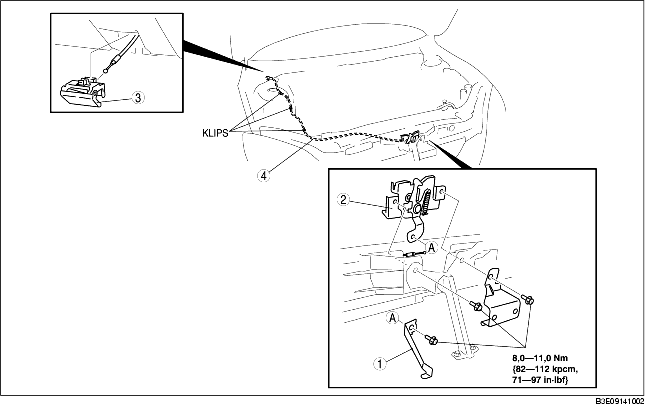

1. För att demontera motorhuvens öppningsvajer, demontera följande delar:
2. Demontera i den ordning som anges i tabellen.
3. Montera i omvänd ordning mot demonteringen.
4. Justera motorhuven (Se JUSTERING AV MOTORHUV.)

.
1. Dra i spaken.
2. Tryck in en övertejpad flat skruvmejsel enligt bilden och dra fliken i pilens riktning för att lossa den från den nedre panelen.
3. Följ anvisningarna i steg 2 och dra spaken utåt för att lossa den från den nedre panelen.